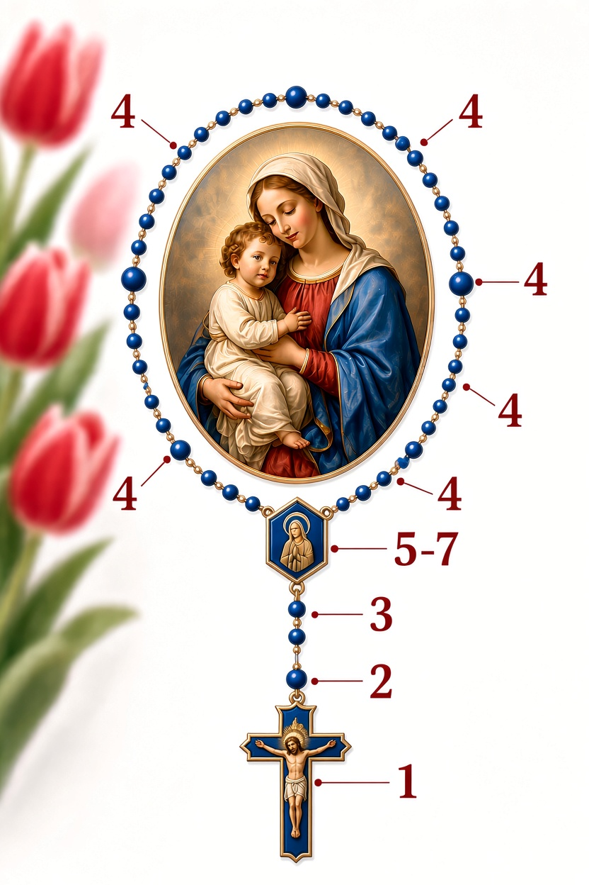

Joyful Mysteries
Monday & Saturday
- The Annunciation
- The Visitation
- The Nativity
- The Presentation
- The Finding in the Temple
Marian devotion
Choose the mysteries for your day and pray one decade at a time.
Monday & Saturday
Tuesday & Friday
Wednesday & Sunday
Thursday

In the name of the Father, and of the Son, and of the Holy Spirit. Amen.
I believe in God, the Father almighty, Creator of heaven and earth, and in Jesus Christ, his only Son, our Lord, who was conceived by the Holy Spirit, born of the Virgin Mary, suffered under Pontius Pilate, was crucified, died and was buried; he descended into hell; on the third day he rose again from the dead; he ascended into heaven, and is seated at the right hand of God the Father almighty; from there he will come to judge the living and the dead. I believe in the Holy Spirit, the Holy Catholic Church, the communion of Saints, the forgiveness of sins, the resurrection of the body, and life everlasting. Amen.
Our Father, who art in heaven, hallowed be thy name; thy kingdom come, thy will be done on earth as it is in heaven. Give us this day our daily bread, and forgive us our trespasses, as we forgive those who trespass against us; and lead us not into temptation, but deliver us from evil. Amen.
Hail Mary, full of grace! The Lord is with you. Blessed are you among women and blessed is the fruit of your womb, Jesus. Holy Mary, Mother of God, pray for us sinners, now and at the hour of our death. Amen.
Glory be to the Father, and to the Son, and to the Holy Spirit. As it was in the beginning, is now and ever shall be world without end. Amen.
O my Jesus, forgive us our sins, save us from the fires of hell and bring all souls into heaven, especially those who need most your divine mercy.
Hail, Holy Queen, Mother of mercy; hail our life, our sweetness, and our hope! To you do we cry, poor banished children of Eve; to you do we send up our sighs, mourning and weeping in this valley of tears. Turn then, O most gracious Advocate, your eyes of mercy toward us, and after this exile, show us the blessed fruit of your womb, Jesus. O clement, O loving, O sweet Virgin Mary!
Lord, have mercy on us (twice). Response: Lord, have mercy on us (twice).
Christ, have mercy on us (twice). Response: Christ, have mercy on us (twice).
Lord, have mercy on us (twice). Response: Lord, have mercy on us (twice).
Christ, hear us (twice). Response: Christ, graciously hear us (twice).
Christ, graciously hear us (twice). Response: Christ, graciously hear us (twice).
God the Father of heaven.
Response: Have mercy on us.
Holy Mary.
Response: Pray for us.
Lamb of God, who take away the sins of the world.
Spare us, O Lord.
Lamb of God, who take away the sins of the world.
Graciously hear us, O Lord.
Lamb of God, who take away the sins of the world.
Have mercy on us.
O God, whose only begotten Son, by his life, death, and resurrection, has purchased for us the rewards of eternal salvation, grant, we pray, that meditating upon these mysteries in the most holy Rosary of the Blessed Virgin Mary, we may imitate what they contain and obtain what they promise. Through the same Christ our Lord. Amen.